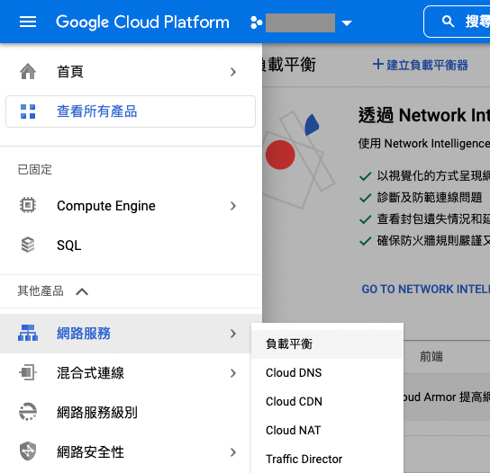
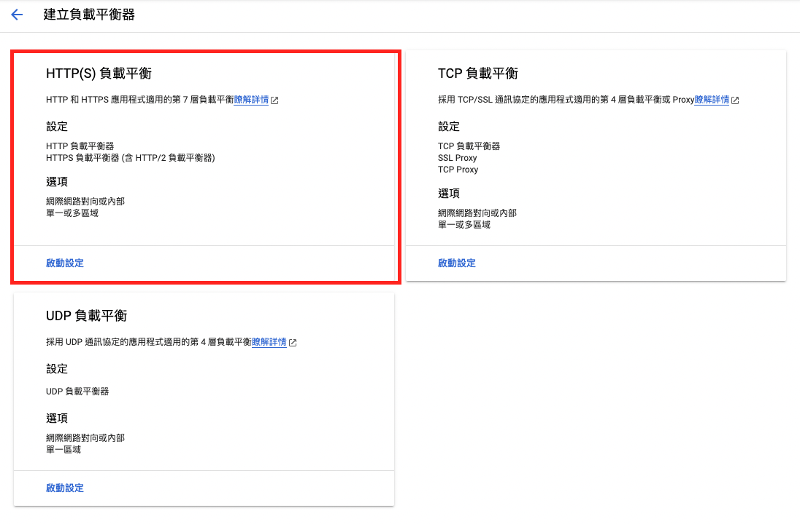
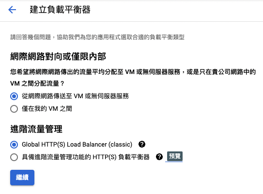
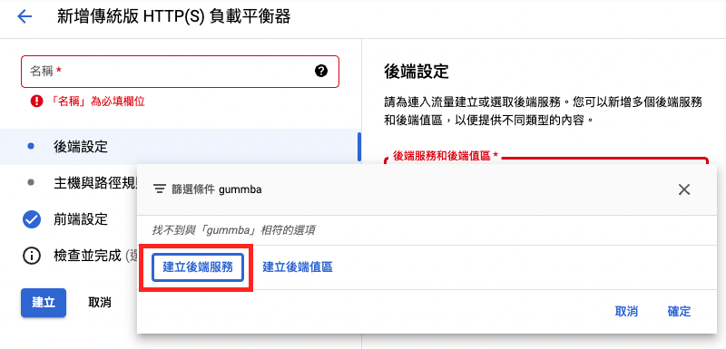
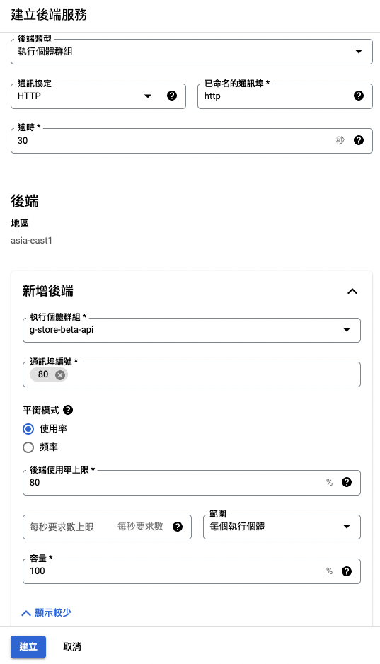
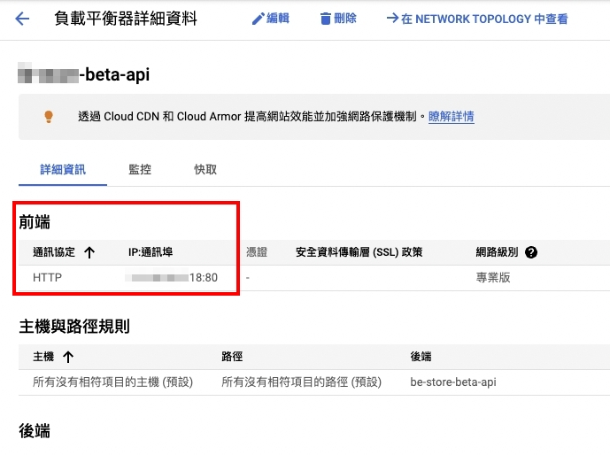

Scalable Server 02 Load Balancing
Configuring Load Balancing on GCP for Enhanced Server Flexibility

In the previous post Scalable Server 01 Auto Scaling
, it was mentioned that we need to configure a set of Load Balancers to distribute internet requests to different server hosts.
This allows us to dynamically adjust the number of hosts based on traffic and maintain stable service operations.
The previously created instance group consists of individual hosts with unique IPs.
However, using load balancing allows us to conceal the individual instance IPs and redirect traffic to new machines as traffic increases.
This ensures a certain level of security and system stability, preventing the original hosts from crashing due to excessive load.
Create a Load Balancing
First, locate Network Services in the sidebar menu and select Load Balancing.

After pressing Create Load Balancer on the top toolbar, select HTTP(S) Load Balancer.

Since the traffic is coming from the internet, select From the internet to VM or serverless service.

Backend Service configuration
Next, select Create a backend service

Choose port number 80 for internal communication, as our internal servers do not have SSL certificates attached.

Frontend Service configuration
Next, go to Frontend Configuration.
If we want to allow access via a fixed set of IP addresses, we’ll need to create a set of IP addresses here.
You can either pre-create them or reserve a set of fixed IP addresses through on-screen prompts.
If you have an SSL certificate, you can also configure it here.

After saving, wait for it to be created.
Then, click into the details of the newly created load balancer.
In the Frontend section, you’ll find an IP address.
Paste this into your browser to access the service you just configured!

So, our load balancer is now successfully set up!
With the automatic scaling feature, when traffic increases and triggers the scaling rules, new virtual machines will be launched.
The load balancer will distribute requests, helping us handle the traffic and maintain stable service operations.
Reference: